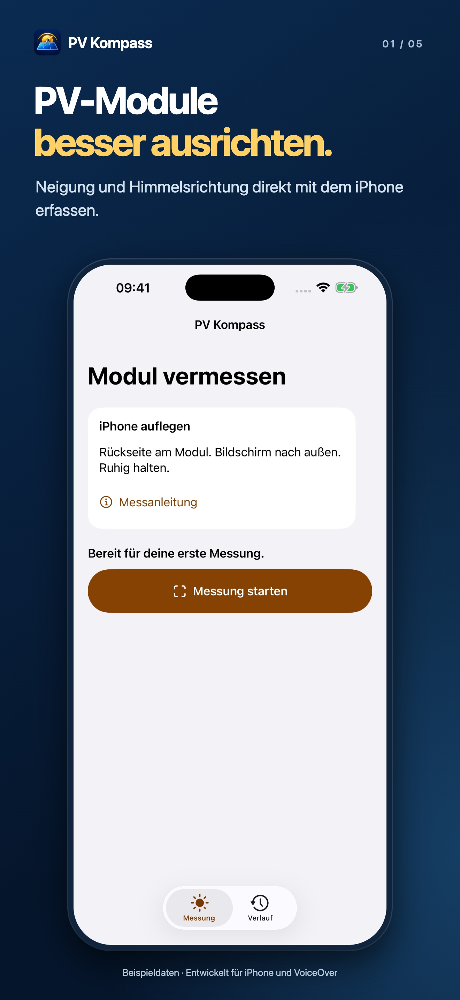
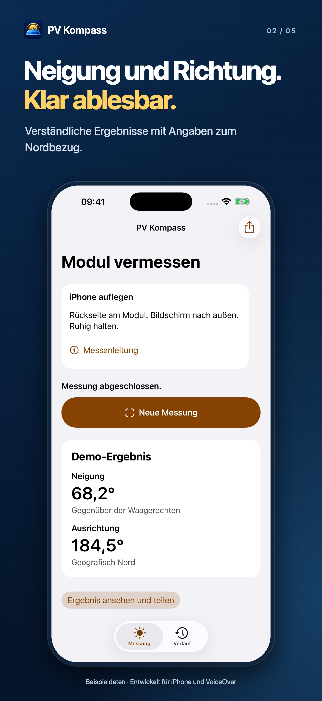
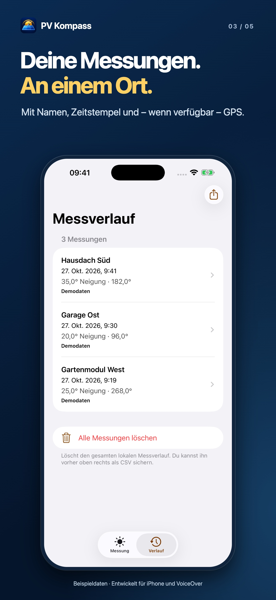
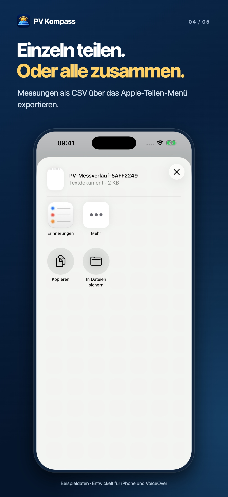
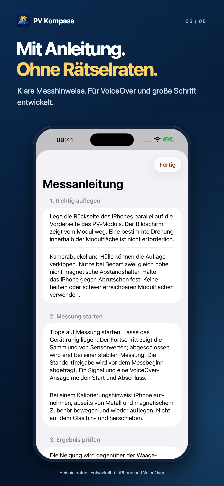

PV Kompass – Veröffentlichung vorbereitet
1320 × 2868 Pixel

1. Messstart
2. Ergebnis
3. Verlauf
4. CSV-Export
5. Anleitung1206 × 2622 Pixel
 1. Messstart
1. Messstart 2. Ergebnis
2. Ergebnis 3. Verlauf
3. Verlauf 4. CSV-Export
4. CSV-Export 5. Anleitung
5. Anleitung